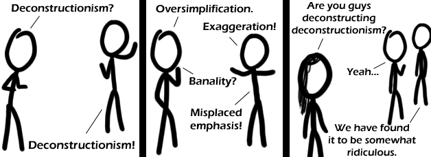

Comic JK 410
When I Feel Like It
⇤
<
?
>
⇥

⇤
<
?
>
⇥
Forum
.
RSS
.
Digg
.
Facebook
.
Reddit
.
Twitter
.
Stumbleupon
Enter your thoughts on number 410 here. Please, no spamming, trolling, deconstructing or phreaking. Your mother deconstructed your dorky college friends. WIN Slight typo in ridiculous, probably not difficult to fix. Actually deconstructionism is just that silly and requires its own word. Quick! Someone write this up and submit it for publishing in Social Text! Okay, who deconstructed the comments this time? >I stop backing up for ONE WEEK to focus on exams and the phantom wiper returns! I wish JK backed the thing up himself... >>Why can't we have a normal commenting system? This is like giving somebody root access to them. >>>We do have a normal comment system. Click on the Forums Link and comment there if you want. I prefer the textbox, it gives it a more spontaneous feel. >>>>Could do with a wiki-esque rollback system for this though - great that we can edit each other's comments, there just shouldn't be jerks around to press DELETE. >>>A Wordpress-esque commenting system, maybe? The ephemeral nature of these comments is itself a commentary on the futility of deconstruction! >It seems someone had backed them up. Yay! >>I think that the futility of the attempted destruction in annoyance over the commentary on the futility of deconstruction is without acknowledgement metacommentary on attempts at anything, within the context of text-as-itself. Of course, I can't really know anything because I am a white straight guy. #Backup Thread Updated: 17:00:00(BST) 02/05/2010# ^ I just restored this, because it was wiped again, but it appears I have a colleague in backing these things up. Who are you? We need to be friends. ~ Luke